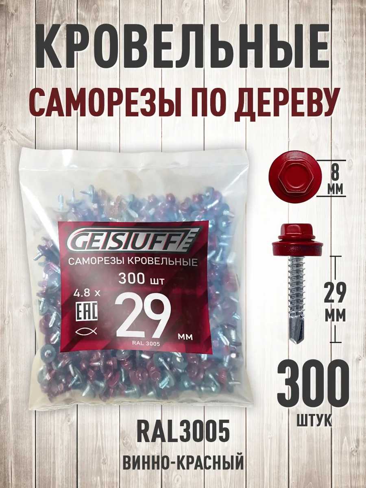
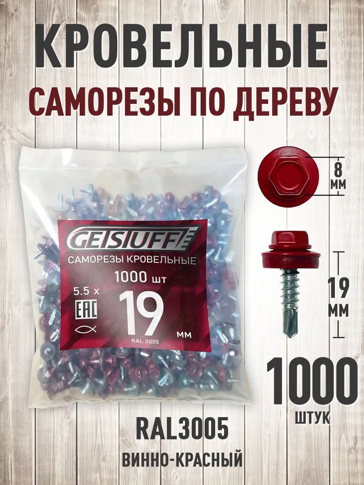

Красно-бордовый оттенок для кровли и ограждений в тон листу. Купить RAL 3005 саморезы GETSTUFF — на сайте со скидкой к WB, опт и доставка по России.


Оцинкованные кровельные саморезы с EPDM в цвете RAL 3005 (красное вино), разные длины и фасовки.
Головка в тон листу не «светится» на скате и заборе, кровля выглядит цельно.
Оформите заявку на сайте. Опт от 20 000 ₽, крупный опт от 100 000 шт. Цена на сайте ниже Wildberries.